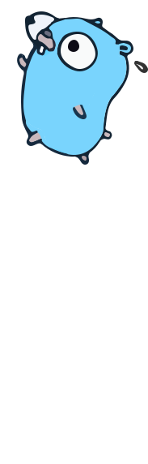

Build simple, secure, scalable systems with Go
- An open-source programming language supported by Google
- Easy to learn and great for teams
- Built-in concurrency and a robust standard library
- Large ecosystem of partners, communities, and tools
Download packages for Windows 64-bit, macOS, Linux, and more
The go command by default downloads and authenticates
modules using the Go module mirror and Go checksum database run by
Google. Learn more.

Companies using Go
Organizations in every industry use Go to power their software and services View all stories
Try Go
What’s possible with Go
Use Go for a variety of software development purposes
-
Cloud & Network Services
With a strong ecosystem of tools and APIs on major cloud providers, it is easier than ever to build services with Go.
-
Command-line Interfaces
With popular open source packages and a robust standard library, use Go to create fast and elegant CLIs.
-
Web Development
With enhanced memory performance and support for several IDEs, Go powers fast and scalable web applications.
-
DevOps & Site Reliability
With fast build times, lean syntax, an automatic formatter and doc generator, Go is built to support both DevOps and SRE.
Get started with Go
Explore a wealth of learning resources, including guided journeys, courses, books, and more.
- Resources to start on your own
-
Guided learning journeys
Step-by-step tutorials to get your feet wet
-
Online learning
Browse resources and learn at your own pace
-
Featured books
Read through structured chapters and theories
-
Cloud Self-paced labs
Jump in to deploying Go apps on GCP
- In-Person Trainings
-
Ardan Labs
Offering customized on-site live training classes.
-
Gopher Guides
Customized In-person, remote, and online training classes. Training for Developers by Developers.
-
Boss Sauce Creative
Personalized or track-based Go training for teams.
-
Shiju Varghese
On-site classroom training on Go and consulting on distributed systems architectures, in India.